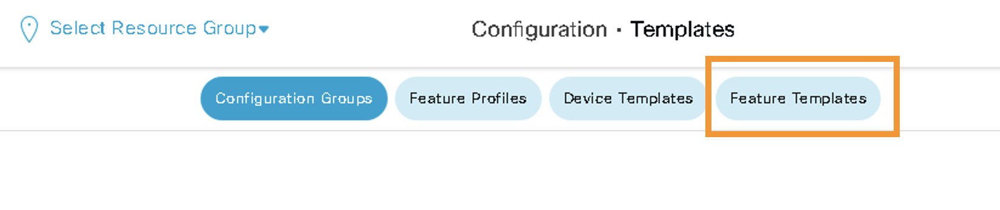
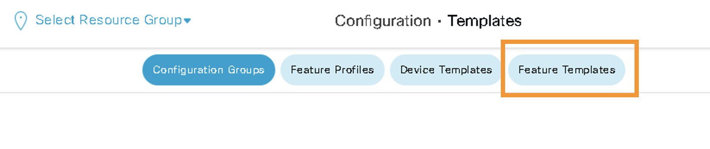

Task 5: Umbrella (SIG) for Site300
Step 1 - Umbrella Configuration
-
Logon to Umbrella Dashboard
-
On the jumphost, open another browser tab and click on the Umbrella SSO bookmark. It will open the Umbrella dashboard and auto-login using single-sign-on.

-
Organization ID can be extracted from the URL field of your Umbrella account.
-
| Note: |
|---|
| Click through the security warning to ignore the certificate (if prompted). |

* On Umbrella, navigate to **Admin > API Keys**
* Generate API and Secret key by clicking on **Legecy Key**. Further, click on *Umbrella Management* and then click on **Generate Token**.


* Copy both **Key** and **Secret** in a notepad, this information will be used in next step.
Step 2 - Update SIG Template.
- On vManage, navigate to Configuration>Templates> Feature, and then search sig and find the template with name VIP23-SIG-Feature-Template.
 


- Click on "Click here to create - Cisco SIG Credintial Template"
- Enter Org ID and keys saved from previous steps and click Save

- Click Update

Step 3 - Apply SIG Template
- Add the SIG template in VPN0 on the device template of node Site300-cE1 in the Transport and Management VPN section.
- Click Device template

- Edit Site300-cE1 template

- Click on Transport and Management VPN

- Click on Cisco Secure Internet Gateway to add the template. Select VIP23-SIG-Feature-Template from the drop-down menu.

- Scroll all the way down to Additional Templates section and ensure Cisco SIG Credentials of VIP23-SIG-Credentials are added.

- Click Update
- Click Next
- Click Configure Devices

- Wait till config push is sucessfull
- Click Device template
Step 4 - SIG Tunnels Verificaiton
-
Confirm that the tunnels to Umbrella are UP by accessing Umbrella dashboard Deployments > Core Identities > Network Tunnels

-
It will take few minutes for tunnels to be Active. The tunnels will remain in
Unestablished Tunnelsstate initially. After few minutes there should be 2Active Tunnelsas shown in below screenshot:
-
Using mRemoteNG application on RDP session, launch console session on ubuntu Site300 VPN10 host. Within the console, open browser and access following site to verify if Site300 is protected by Umbrella
welcome.umbrella.com -
This is because, the traffic is still going out throught normal interface NOT throught SIG tunnels. We have to create a Service Route to redirect traffic to Umbrella SIG Tunnels
Step 5 - Redirect Traffic to SIG tunnels
Add a Service Route to SIG in order to redirect traffic from VPN 10 to Umbrella.
-
On vManage, navigate to Configuration > Templates > Feature, and then search for vpn_10_site300_ce1. Click the three dots (...) on the right side, and then click Edit in the dropdown menu as shown in below screenshot:

- Click Service Route
- Click New Service Route
- Add a route to
0.0.0.0/0pointing to SIG. - Click Add and then Update at the bottom of the page

- Click Next and then click Configure Devices
- Wait till config push is sucessfull

- Using mRemoteNG application on RDP session, launch console session on ubuntu Site300 VPN10 host. Launch Chromium Web browser and check if the site is now protected by Umbrella. Use the following link
'welcome.umbrella.com`

Now traffic in VPN 10 of site 300 is protected by Umbrella.
- Verify the traffic routing on this Site300 by initiating
traceroute 8.8.8.8command on ubuntu Site300 VPN10 host by using mRemoteNG application.